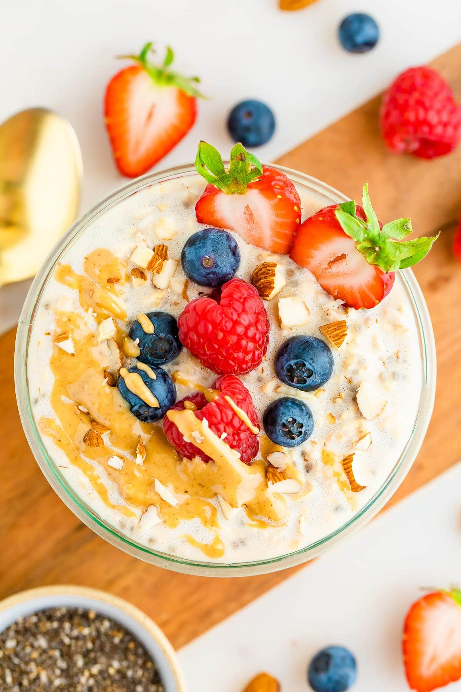

Protein Packed Overnight Oats

Ingredients:
- 1/2 cup rolled oats
- 1 cup milk (dairy or plant-based)
- scoop of your favorite protein powder (whey, plant-based, etc.)
- 1 tablespoon chia seeds
- 1 tablespoon honey or maple syrup
- Fresh fruits for topping
Instructions:
- In a mason jar or airtight container, combine the rolled oats, milk, protein powder, chia seeds, and honey/maple syrup.
- Stir well to ensure all ingredients are mixed.
- Close the container and refrigerate overnight (or at least for 4-6 hours) to allow the oats to soak and soften.
- In the morning, give it a good stir and add fresh fruits on top before enjoying your protein-packed and filling breakfast.
Home
Back Up